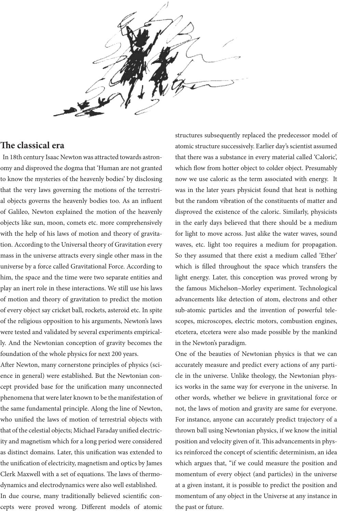

e classical era
In 18th century Isaac Newton was attracted towards astron-
omy and disproved the dogma that ‘Human are not granted
to know the mysteries of the heavenly bodies’ by disclosing
that the very laws governing the motions of the terrestri-
al objects governs the heavenly bodies too. As an inuent
of Galileo, Newton explained the motion of the heavenly
objects like sun, moon, comets etc. more comprehensively
with the help of his laws of motion and theory of gravita-
tion. According to the Universal theory of Gravitation every
mass in the universe attracts every single other mass in the
universe by a force called Gravitational Force. According to
him, the space and the time were two separate entities and
play an inert role in these interactions. We still use his laws
of motion and theory of gravitation to predict the motion
of every object say cricket ball, rockets, asteroid etc. In spite
of the religious opposition to his arguments, Newton’s laws
were tested and validated by several experiments empirical-
ly. And the Newtonian conception of gravity becomes the
foundation of the whole physics for next 200 years.
Aer Newton, many cornerstone principles of physics (sci-
ence in general) were established. But the Newtonian con-
cept provided base for the unication many unconnected
phenomena that were later known to be the manifestation of
the same fundamental principle. Along the line of Newton,
who unied the laws of motion of terrestrial objects with
that of the celestial objects; Michael Faraday unied electric-
ity and magnetism which for a long period were considered
as distinct domains. Later, this unication was extended to
the unication of electricity, magnetism and optics by James
Clerk Maxwell with a set of equations. e laws of thermo-
dynamics and electrodynamics were also well established.
In due course, many traditionally believed scientic con-
cepts were proved wrong. Dierent models of atomic
structures subsequently replaced the predecessor model of
atomic structure successively. Earlier day’s scientist assumed
that there was a substance in every material called ‘Caloric’,
which ow from hotter object to colder object. Presumably
now we use caloric as the term associated with energy. It
was in the later years physicist found that heat is nothing
but the random vibration of the constituents of matter and
disproved the existence of the caloric. Similarly, physicists
in the early days believed that there should be a medium
for light to move across. Just alike the water waves, sound
waves, etc. light too requires a medium for propagation.
So they assumed that there exist a medium called ‘Ether’
which is lled throughout the space which transfers the
light energy. Later, this conception was proved wrong by
the famous Michelson–Morley experiment. Technological
advancements like detection of atom, electrons and other
sub-atomic particles and the invention of powerful tele-
scopes, microscopes, electric motors, combustion engines,
etcetera, etcetera were also made possible by the mankind
in the Newton’s paradigm.
One of the beauties of Newtonian physics is that we can
accurately measure and predict every actions of any parti-
cle in the universe. Unlike theology, the Newtonian phys-
ics works in the same way for everyone in the universe. In
other words, whether we believe in gravitational force or
not, the laws of motion and gravity are same for everyone.
For instance, anyone can accurately predict trajectory of a
thrown ball using Newtonian physics, if we know the initial
position and velocity given of it. is advancements in phys-
ics reinforced the concept of scientic determinism, an idea
which argues that, “if we could measure the position and
momentum of every object (and particles) in the universe
at a given instant, it is possible to predict the position and
momentum of any object in the Universe at any instance in
the past or future.